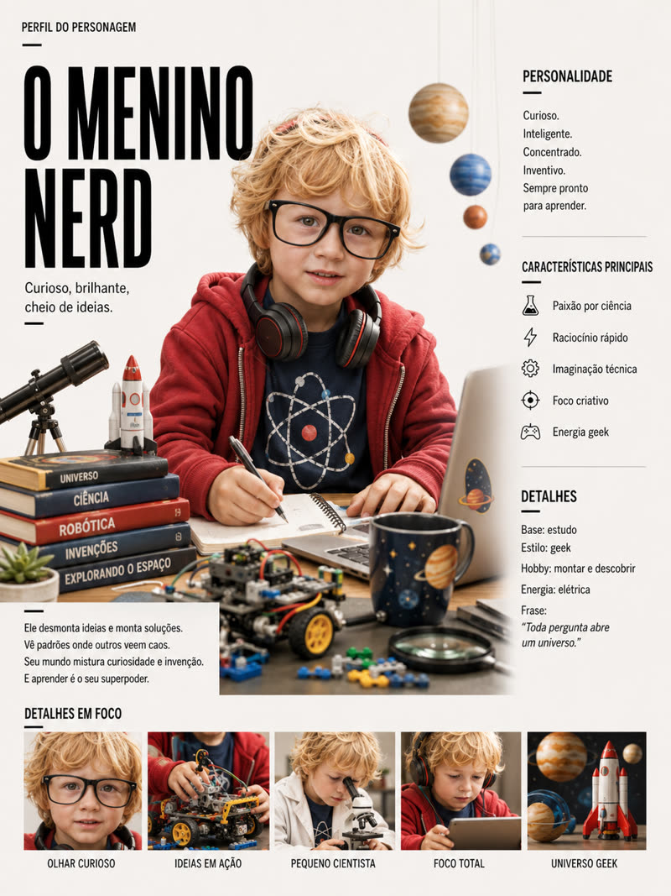
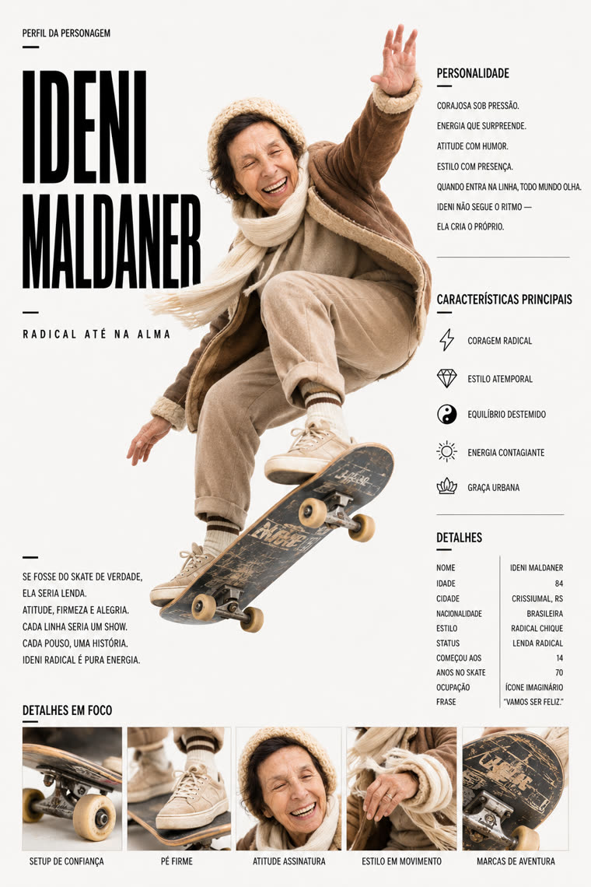
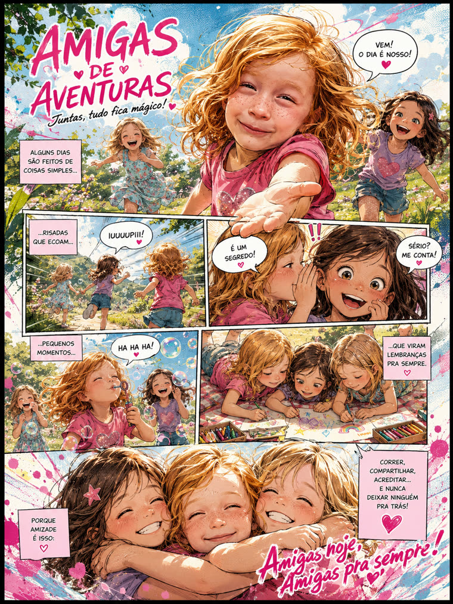
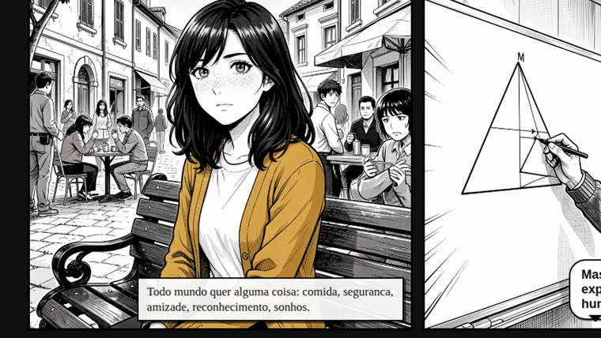
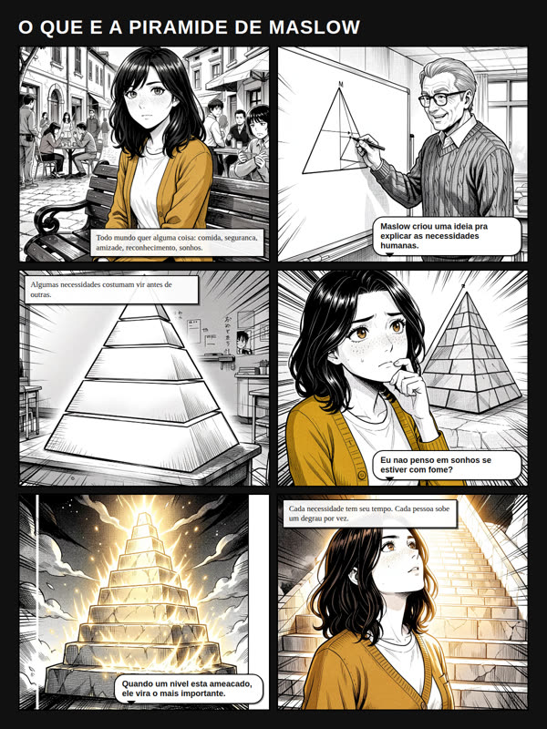

Entro com uma foto (ou uma descrição) e uma história. Saem artefatos com a mesma pessoa consistente: ficha de personagem → página de HQ → motion comic narrado. Tudo local.

Fazer HQ com pessoas reais esbarra sempre no mesmo nó: manter o personagem igual entre quadros, páginas e episódios. O inemaref trata a referência (o model sheet da pessoa) como o passo 0 que trava tudo — e a reusa em cada artefato seguinte.
Uma ficha (retrato + bio + traços + grid) vira a fonte de verdade do personagem, atravessando página, vídeo e episódios.
O motor de imagem gera só a arte sem texto; narração, balões e SFX são camada HTML/CSS renderizada — editável e nítida.
Imagem no flux2-klein (inemaimg), voz no inemavox, montagem em ffmpeg/Chromium. Sem nuvem, sem assinatura.
Três skills construídas hoje (folder → quadrinho → motioncomic). Série e filme vêm a seguir, reusando o ecossistema de vídeo do INEMA.
Cria a referência. A ficha do personagem (retrato + bio + traços + grid) a partir de 1 foto ou texto. 2 layouts × 2 artes.
Monta a página. 6 quadros textless (mangá p&b) + balão/SFX/legenda em camada, com posicionamento consciente de rosto. 2 modelos de grade.
Vira vídeo. Forma A: slideshow narrado. Forma B: a câmera filma a página de papel real, mergulhando quadro a quadro.
Serviços locais do ecossistema INEMA. As skills falam com eles por HTTP; nada vai pra nuvem.
Motor de imagem, em localhost:8000. Gera os quadros textless.
# checar curl localhost:8000/health
TTS local (voz clonada bella/rachel), em 127.0.0.1:7860. Só no motion comic.
# checar curl 127.0.0.1:7860/health
Render do HTML pra PNG e montagem do MP4. Python 3 e OpenCV (rosto).
# rodar os testes for t in skill/*/tests/test_*.py; do python3 "$t"; done
Cada skill é um pipeline Python que você roda da raiz do repo. A saída cai em
output/<id>/ (gitignorado).
Monte uma ficha.json (nome, aparência reutilizável, 5 focos) e gere a ficha do personagem.
python3 - <<'PY' import sys, json sys.path.insert(0, "skill/folder/scripts") from build_folder import build_folder ficha = json.load(open("CAMINHO/ficha.json")) build_folder(ficha, template_dir="skill/folder/templates/editorial-revista", arte="cartoon", modo="texto") # saída: output/<id>/folder.png + referencia.json PY
Um roteiro.json com exatamente 6 painéis (cena textless + narração/fala/SFX opcionais).
Reuse a aparência da referência pra manter a pessoa.
python3 - <<'PY' import sys, json sys.path.insert(0, "skill/quadrinho/scripts") from build_pagina import build_pagina rot = json.load(open("CAMINHO/roteiro.json")) build_pagina(rot, template_dir="skill/quadrinho/templates/grade-uniforme", # ou manga-dinamico arte="manga") # saída: output/<id>/pagina.png PY
Roteiro com páginas de 6 quadros. A câmera abre na prancha, mergulha em cada quadro durante a narração, afasta e encaixa no próximo. Precisa do inemavox de pé.
python3 - <<'PY' import sys, json sys.path.insert(0, "skill/motioncomic/scripts") from build_travel import build_video_travel rot = json.load(open("CAMINHO/roteiro.json")) build_video_travel(rot, voice="bella", arte="manga") # saída: output/<id>/<id>-travel.mp4 PY
Quando não precisa da página montada: uma imagem por vez, com zoom e narração voz-off.
from build_motion import build_video build_video(rot, voice="bella") # saída: output/<id>/<id>.mp4
Fichas e páginas geradas no pipeline; o frame do motion comic é a câmera mergulhando num quadro da página de papel.




A base (referência → página → vídeo) está pronta e testada. O que vem reaproveita o ecossistema de vídeo já existente.